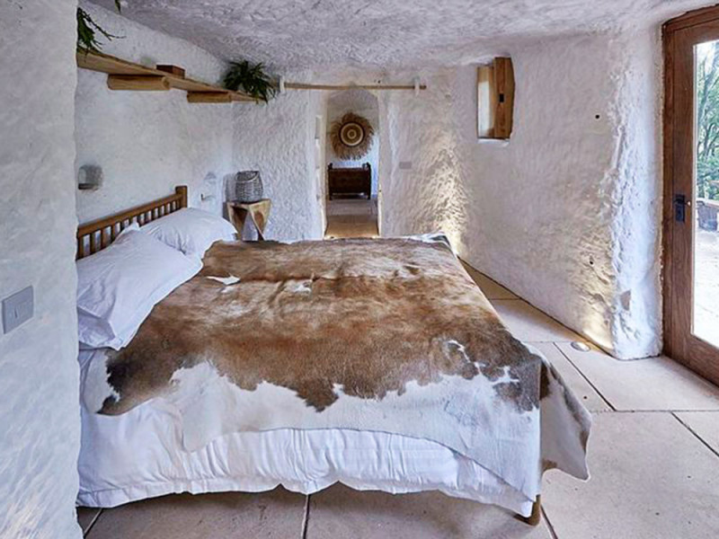
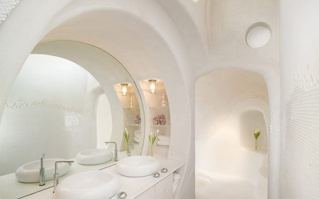

Představte si, že venku panují letní vedra přes 40 °C, ale vy doma nepotřebujete klimatizaci. V zimě zase netopíte – a přesto je uvnitř příjemných 18 až 20 stupňů. Nejde o futuristický ekologický projekt, ale o několik století starý způsob bydlení, který dodnes funguje v jižním Španělsku.
V andaluské vesnici Zújar v provincii Granada lidé stále žijí v tzv. casas cueva – jeskynních domech vyhloubených do skály. A překvapivě nejde jen o turistickou atrakci. Pro mnoho obyvatel jsou tyto domy běžným, pohodlným a velmi levným způsobem života.
Jeskynní obydlí mají v Andalusii dlouhou tradici. Nejvíce se vyskytují v oblasti kolem měst Guadix, Baza nebo právě Zújaru. Díky specifickému složení půdy a měkké hornině bylo možné domy jednoduše vyhloubit přímo do kopců.
Na první pohled často vypadají nenápadně – zvenku je vidět jen bílá fasáda s dveřmi a komínem. Skutečný prostor se ale skrývá uvnitř hory. Právě skála je tajemstvím jejich mimořádné energetické úspornosti.

Přirozená klimatizace zdarma
Jeskynní domy fungují jako dokonalý přírodní izolant. Zemina kolem domu udržuje stabilní teplotu po celý rok – většinou mezi 18 až 20 °C.
V létě je uvnitř příjemný chládek, zatímco venku spalující vedro. V zimě naopak teplota neklesá tak drasticky jako v běžných domech.
Výsledek? Téměř nulové náklady na klimatizaci, minimální potřeba vytápění, nízké účty za energie a velmi příjemné mikroklima. V době drahých energií působí něco tak jednoduchého až neuvěřitelně moderně.

Jeskyně s Wi-Fi a moderní kuchyní
Přestože jde o tradiční způsob bydlení, dnešní casas cueva rozhodně nepřipomínají pravěké jeskyně.
Mnohé domy jsou kompletně zrekonstruované a mají moderní koupelny, vybavené kuchyně, internet, krby, terasy s výhledem na hory a často i bazén.
Uvnitř bývá překvapivé ticho. Silné stěny tlumí hluk zvenčí a mnoho lidí popisuje bydlení v jeskyni jako mimořádně klidné a útulné.


Kolik stojí život v jeskyni?
A teď přichází ŠOK.
V oblasti Zújaru lze stále najít obyvatelné jeskynní domy kolem 20 000 €. Menší zrekonstruované domy se často pohybují mezi 25–40 tisíci eur podle velikosti a stavu. Luxusnější turistické objekty jsou samozřejmě dražší.
Ceny jsou ale stále nesrovnatelně nižší než ve většině Evropy. To je jeden z důvodů, proč se o tuto oblast začínají zajímat cizinci hledající levnější a klidnější život ve Španělsku.

Dá se tam pracovat?
Zújar je malá obec s několika tisíci obyvateli, takže pracovní možnosti nejsou tak široké jako ve velkých městech. Přesto existuje několik směrů:
Turismus
Právě jeskynní domy lákají stále více turistů. Lidé zde pracují v malých penzionech a ubytováních, v restauracích, jako správci turistických objektů nebo pronajímají vlastní casas cueva přes Airbnb.
Práce na dálku
Pro digitální nomády může být oblast velmi zajímavá. Nabízí nízké životní náklady, klid, slunečné počasí a stabilní internet v mnoha domech.
Zemědělství a lokální služby
Okolí je zemědělská oblast. Pěstují se olivy, mandloně nebo obilí. Část místních pracuje v zemědělství, stavebnictví nebo službách.
Lázně a přírodní turismus
Nedaleko se nachází termální lázně Baños de Zújar a obrovská vodní nádrž Embalse del Negratín, která přitahuje návštěvníky kvůli koupání, kajakům nebo turistice.

Romantika… ale ne pro každého
Život v jeskyni zní romanticky – a pro mnoho lidí opravdu je. Klid, minimum stresu, pomalé tempo života a téměř nulové účty za energie mají obrovské kouzlo.
Na druhou stranu je potřeba počítat i s realitou: oblast je poměrně odlehlá, bez auta se člověk prakticky neobejde, pracovní nabídka je omezená a ne každý si zvykne na život v malé andaluské komunitě.
Přesto počet lidí, kteří hledají alternativu k drahému a hektickému životu ve městech, roste.
Zújar leží v provincii Granada v Andalusii, poblíž pohoří Sierra de Baza a jezera Negratín. Oblast je známá vysokým počtem tradičních jeskynních obydlí a velmi horkým klimatem v létě.

